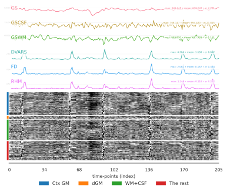

Cortical surface anatomical parcellations.
The cortical parcellations were generated based on the cortical surface registration of SUGAR. Parcellations are shown on the white (upper row) and pial surfaces (lower row).

This panel shows skull-stripped brain and cortical/subcortical segmentation of the T1w image.

The white surface (blue contours) and pial surface (red contours) were reconstructed with FastCSR and are overlaied on the native T1w image.
The cortical parcellations were generated based on the cortical surface registration of SUGAR. Parcellations are shown on the white (upper row) and pial surfaces (lower row).
SynthMorph was used to perform nonlinear registration between the T1w reference and the template space. Hover on the panels with the mouse pointer to transition between both native T1w and template spaces. Spatial normalization of the T1w image to the MNI152NLin6Asym template.
bbregister (boundary-based registration, BBR) - 6 dofbbregister was used to generate transformations from EPI-BOLD space to T1w-space.
Functional MRI was resampled to the MNI152NLin6Asym template space based on bbregister, SUGAR and SynthMorph.
The temporal SNR map was estimated by the TSNR from nipype.

Summary statistics are plotted, which may reveal trends or artifacts in the BOLD data. Global signals (GS) were calculated within the whole-brain, and the white-matter (GSWM) and the cerebro-spinal fluid (GSCSF) were calculated with their corresponding masks. The standardized DVARS, framewise-displacement measures (FD), and relative head motion (RHM) were calculated. A carpet plot shows time series for all voxels within the brain mask, including cortical gray matter (Ctx GM), deep (subcortical) gray matter (dGM), white-matter and CSF (WM+CSF), and the rest of the brain (The rest).

nextflow run /opt/DeepPrep/deepprep/nextflow/deepprep.nf -c /output/WorkDir/nextflow/run.config -w /output/WorkDir/nextflow -with-report /output/QC/report.html -with-timeline /output/QC/timeline.html --bids_dir /input --output_dir /output --fs_license_file /fs_license.txt --bold_task_type restWe kindly ask to report results preprocessed with this tool using the following boilerplate.
Anatomical and functional imaging data were preprocessed using DeepPrep 25.1.0 (Ren et al., 2025).
Anatomical Data Preprocessing
For participants with multiple T1-weighted (T1w) images, head motion correction was performed using FreeSurfer (v7.2.0, Fischl., 2012). Intensity non-uniformity in the T1w image was corrected using N4 bias field correction (SimpleITK, v2.3.0, Beare et al., 2018), and the processed T1w image served as the anatomical reference throughout the pipeline. Skull stripping and brain tissue segmentation—including cerebrospinal fluid (CSF), white matter (WM), and gray matter (GM)—were performed using FastSurferCNN (FastSurfer v1.1.0, Henschel et al., 2020). Cortical surface reconstruction was conducted using FastCSR v1.0.0 (Ren et al., 2022) and aligned to standard surface templates (fsaverage) via SUGAR v1.0.0 (Ren et al., 2024). Spatial normalization to a standard space (MNI152NLin6Asym) was achieved through nonlinear registration with SynthMorph v2 (Hoffman et al., 2024).
Functional Data Preprocessing
A reference volume was generated by averaging nonsteady-state volumes (dummy scans). Head motion parameters were estimated using mcflirt (FSL v6.0.5.1, Woolrich et al., 2001), and slice-timing correction was applied using 3dTshift (AFNI, v24.0.00, Cox and Hyde., 1997) when slice-timing information was available in the BIDS metadata. If fieldmaps were available, susceptibility distortion correction was performed using SDCflow v2.8.1 (Esteban et al., 2020), with the estimated fieldmap rigidly aligned to the reference volume. The BOLD reference was co-registered to the T1w reference using boundary-based registration (bbregister from FreeSurfer; Greve and Fischl, 2009). Preprocessed BOLD timeseries were resampled into both volumetric (MNI152NLin6Asym) and surface templates (fsaverage6) through a single interpolation step, incorporating head motion transformations, susceptibility distortion correction (if applicable), and anatomical co-registration. Volumetric resampling was conducted using DeepPrep’s custom methodology, while surface resampling was performed using mri_vol2surf (FreeSurfer).
Several confounding time series were extracted from the preprocessed BOLD data:
• Motion-related confounds: Framewise displacement (FD) was computed using both Power’s (absolute sum of relative motion; Power et al., 2014) and Jenkinson’s (relative root mean square displacement; Jenkinson et al., 2002) formulations. FD and DVARS were calculated for each functional run using their respective implementations in Nipype (Power et al., 2014).
• Global signal regression: Mean time series were extracted from the CSF, WM, and whole-brain masks.
• Physiological noise correction: Component-based noise correction (CompCor; Behzadi et al., 2007) was performed using three variants: Temporal CompCor (tCompCor): Principal components were derived from the top 2% most variable voxels within the brain mask after high-pass filtering (128s cutoff). Principal components were retained until they explained 50% of the variance within the nuisance mask. Anatomical CompCor (aCompCor): Probabilistic masks for CSF, WM, and combined CSF+WM (generated from FastSurfer’s segmentation) were resampled into BOLD space and binarized at a threshold of 0.99. Principal components were retained until they explained 50% of the variance within each nuisance mask. Background CompCor (bCompCor): BOLD timeseries from non-brain regions within the background of the field of view were extracted, and the top 10 principal components were retained by default.
To account for higher-order motion artifacts, temporal derivatives and quadratic terms of motion estimates and global signals were computed (Satterthwaite et al., 2013). Motion outliers were defined as frames exceeding an FD threshold of 0.5 mm or standardized DVARS >1.5. A final nuisance regression step incorporated principal component analysis of signal from a thin band of voxels along the brain’s edge (Patriat, Reynolds, and Birn, 2017) to further mitigate motion-related artifacts.
Copyright Waiver
The above boilerplate text was automatically generated by DeepPrep with the express intention that users could copy and paste this text into their manuscripts unchanged. It is released under the CC0 license.
References
Beare, R., Lowekamp, B. C., Yaniv, Z. 2018. “Image Segmentation, Registration and Characterization in R with SimpleITK”, J Stat Softw, 86(8), https://doi.org/10.18637/jss.v086.i08.
Behzadi, Yashar, Khaled Restom, Joy Liau, and Thomas T. Liu. 2007. “A Component Based Noise Correction Method (CompCor) for BOLD and Perfusion Based fMRI.” NeuroImage 37 (1): 90–101. https://doi.org/10.1016/j.neuroimage.2007.04.042.
Cox, R. W. and Hyde, J. S. 1997. “Software tools for analysis and visualization of fMRI data.” NMR Biomed 10, 171-178. https://doi.org:10.1002/(sici)1099-1492(199706/08)10:4/5<171::aid-nbm453>3.0.co;2-l.
Esteban, O., Markiewicz, C., Blair, R., Poldrack, R. and Gorgolewski, K. 2020. “SDCflows: Susceptibility distortion correction workFLOWS.” Zenodo. https://doi.org/10.5281/zenodo.3758524.
Fischl, B. 2012. “FreeSurfer.” Neuroimage 62, 774-781. https://doi.org:10.1016/j.neuroimage.2012.01.021.
Greve, Douglas N, and Bruce Fischl. 2009. “Accurate and Robust Brain Image Alignment Using Boundary-Based Registration.” NeuroImage 48 (1): 63–72. https://doi.org/10.1016/j.neuroimage.2009.06.060.
Henschel, L., Conjeti, S., Estrada, S., Diers, K., Fischl, B., & Reuter, M. (2020). “Fastsurfer-a fast and accurate deep learning based neuroimaging pipeline.” NeuroImage, 219, 117012. https://doi.org:10.1016/j.neuroimage.2020.117012.
Hoffmann, M., Hoopes, A., Greve, D. N., Fischl, B. and Dalca, A. V. 2024. “Anatomy-aware and acquisition-agnostic joint registration with SynthMorph.” Imaging Neuroscience 2, 1-33. https://doi.org:10.1162/imag_a_00197.
Jenkinson, Mark, Peter Bannister, Michael Brady, and Stephen Smith. 2002. “Improved Optimization for the Robust and Accurate Linear Registration and Motion Correction of Brain Images.” NeuroImage 17 (2): 825–41. https://doi.org/10.1006/nimg.2002.1132.
Patriat, Rémi, Richard C. Reynolds, and Rasmus M. Birn. 2017. “An Improved Model of Motion-Related Signal Changes in fMRI.” NeuroImage 144, Part A (January): 74–82. https://doi.org/10.1016/j.neuroimage.2016.08.051.
Power, Jonathan D., Anish Mitra, Timothy O. Laumann, Abraham Z. Snyder, Bradley L. Schlaggar, and Steven E. Petersen. 2014. “Methods to Detect, Characterize, and Remove Motion Artifact in Resting State fMRI.” NeuroImage 84 (Supplement C): 320–41. https://doi.org/10.1016/j.neuroimage.2013.08.048.
Ren, J., Hu, Q., Wang, W., Zhang, W., Hubbard, C. S., Zhang, P., An, N., Zhou, Y., Dahmani, L., Wang, D., Fu, X., Sun, Z., Wang, Y., Wang, R., Li, L., and Liu, H. 2022. “Fast cortical surface reconstruction from MRI using deep learning.” Brain informatics, 9(1), 6. https://doi.org/10.1186/s40708-022-00155-7.
Ren, J., An, N., Zhang, Y., Wang, D., Sun, Z., Lin, C., Cui, W., Zhou, Y., Zhang, W., Hu, Q., Zhang, P., Hu, D., Wang, D., and Liu, H. 2024. “SUGAR: Spherical ultrafast graph attention framework for cortical surface registration.” Medical Image Analysis, 94, 103122. https://doi.org/10.1016/j.media.2024.103122.
Ren, J., An, N., Lin, C., Zhang, Y., Sun, Z., Zhang, W., Li, S., Guo, N., Cui, W., Hu, Q. Wang, W., Wu, X., Wang, Y., Jiang, T., Satterthwaite T. D., Wang, D. and Liu, H. 2025. “DeepPrep: an accelerated, scalable and robust pipeline for neuroimaging preprocessing empowered by deep learning.” Nature Methods. https://doi.org/10.1038/s41592-025-02599-1.
Satterthwaite, Theodore D., Mark A. Elliott, Raphael T. Gerraty, Kosha Ruparel, James Loughead, Monica E. Calkins, Simon B. Eickhoff, et al. 2013. “An improved framework for confound regression and filtering for control of motion artifact in the preprocessing of resting-state functional connectivity data.” NeuroImage 64 (1): 240–56. https://doi.org/10.1016/j.neuroimage.2012.08.052.
Woolrich, M. W., Ripley, B. D., Brady, M. and Smith, S. M. 2001. Temporal autocorrelation in univariate linear modeling of FMRI data. Neuroimage 14, 1370-1386. https://doi.org:10.1006/nimg.2001.0931.
No errors to report!